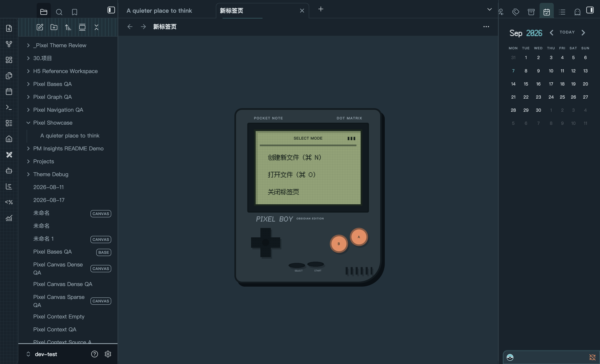
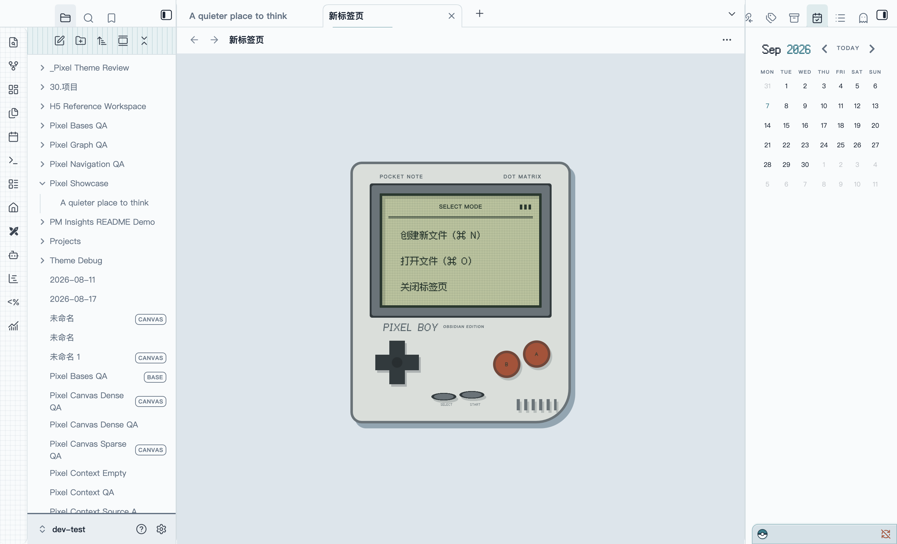

<!doctype html>
<html lang="en">
<meta charset="utf-8">
<title>Pixel — README artwork</title>
<!-- Export at 1920 × 1080, scale 1, after local fonts and images have loaded.
     The background is generated artwork; both workspace images are native Obsidian captures. -->
<style>
  @font-face {
    font-family: Pixel;
    src: url('../../fonts/fusion-pixel-12px-proportional-zh_hans.woff2');
  }
  @font-face {
    font-family: Mono;
    src: url('../../fonts/JetBrainsMono-Regular.woff2');
  }
  * { box-sizing: border-box; }
  :root {
    --paper: #f8fbfc;
    --ink: #182434;
    --cyan: #78cdd6;
    --amber: #d48732;
  }
  body { margin: 0; background: var(--ink); }
  .cover {
    position: relative;
    width: 1920px;
    height: 1080px;
    overflow: hidden;
    background: url('material-background.png') center / cover;
    font-family: Arial, sans-serif;
  }
  header {
    position: absolute;
    inset: 26px 0 auto;
    text-align: center;
  }
  .eyebrow {
    margin: 0;
    color: #acc1ca;
    font: 14px/1.5 Mono;
    letter-spacing: 5px;
  }
  .wordmark {
    position: relative;
    display: inline-block;
    margin: 8px 0 6px;
    font: 108px/1 Pixel;
    letter-spacing: 8px;
    color: #c1e3e9;
    background: linear-gradient(165deg, #ffffff 8%, #def2f4 31%, #81c1ca 58%, #cce6e9 77%, #ffffff 93%);
    background-clip: text;
    -webkit-text-fill-color: transparent;
    filter: drop-shadow(0 2px 0 #6b939d) drop-shadow(0 7px 0 #263f4c) drop-shadow(0 18px 22px #08131d70);
  }
  .tagline {
    display: table;
    margin: 6px auto 0;
    padding: 10px 26px;
    border: 1px solid #d8ebf43b;
    border-radius: 8px;
    background: linear-gradient(110deg, #e6f5ff1a, #e6f5ff09);
    box-shadow: inset 0 1px 0 #ffffff14, 0 12px 30px #06141b18;
    backdrop-filter: blur(18px);
    color: #e3edf1;
    font: 16px/1.3 Mono;
    letter-spacing: 2px;
  }
  .tagline span { padding: 0 17px; color: var(--cyan); }
  .workspace {
    position: absolute;
    top: 306px;
    width: 880px;
    margin: 0;
    padding: 12px 12px 0;
    border: 1px solid #dcecf25c;
    border-radius: 16px;
    backdrop-filter: blur(18px);
    box-shadow: inset 0 1px 0 #ffffff55, 0 32px 64px #06111f42, 0 6px 12px #06111f21;
  }
  .workspace img {
    display: block;
    width: 100%;
    height: auto;
    border: 1px solid #b2cbd133;
    border-radius: 6px;
  }
  .dark {
    left: 56px;
    transform: rotate(-1deg);
    background: linear-gradient(150deg, #cadfe829, #1425339c);
    color: #d9e9ef;
  }
  .light {
    right: 56px;
    transform: rotate(1deg);
    background: linear-gradient(150deg, #ffffffb3, #f8fbfc66);
    color: #344b5c;
  }
  figcaption {
    display: flex;
    align-items: center;
    justify-content: space-between;
    height: 54px;
    padding: 0 12px;
    font: 15px/1.5 Mono;
  }
  figcaption strong { font-weight: normal; letter-spacing: 2px; }
  figcaption strong:before {
    content: '';
    display: inline-block;
    width: 8px;
    height: 8px;
    margin-right: 12px;
    background: var(--cyan);
    box-shadow: 0 0 12px #78cdd655;
  }
  .light figcaption strong:before { background: var(--amber); box-shadow: none; }
  footer {
    position: absolute;
    inset: auto 112px 34px;
    display: flex;
    align-items: center;
    justify-content: space-between;
    font: 15px/1.5 Mono;
    letter-spacing: 1.5px;
  }
  .signature { color: #c3d4dc; }
  .platform { color: #405769; }
  .palette {
    position: absolute;
    left: 50%;
    transform: translateX(-50%);
    display: flex;
    gap: 14px;
    padding: 13px 20px;
    border: 1px solid #ffffff66;
    border-radius: 12px;
    background: linear-gradient(115deg, #d9eaf133, #ffffff66);
    backdrop-filter: blur(20px);
    box-shadow: inset 0 1px 0 #ffffff50, 0 8px 20px #10233118;
  }
  .palette i {
    width: 22px;
    height: 22px;
    border: 1px solid #ffffff88;
    border-radius: 4px;
    background: var(--swatch);
    box-shadow: inset 0 1px 2px #ffffff55, 0 3px 5px #10233126;
  }
</style>
<main class="cover">
  <header>
    <p class="eyebrow">A THEME FOR OBSIDIAN</p>
    <h1 class="wordmark">PIXEL</h1>
    <p class="tagline">PAPER SURFACES<span>·</span>PIXEL SOUL<span>·</span>QUIET FOCUS</p>
  </header>
  <figure class="workspace dark">
    
    <figcaption><strong>DARK</strong><span>PIXEL BOY / Obsidian shell</span></figcaption>
  </figure>
  <figure class="workspace light">
    
    <figcaption><strong>LIGHT</strong><span>PIXEL BOY / Paper shell</span></figcaption>
  </figure>
  <footer>
    <span class="signature">PIXELS ON PAPER.</span>
    <div class="palette" role="img" aria-label="Paper, Canvas, Cyan, Amber, Brick and Ink theme colors">
      <i style="--swatch:#f8fbfc"></i><i style="--swatch:#e8eef2"></i>
      <i style="--swatch:#197d8c"></i><i style="--swatch:#d48732"></i>
      <i style="--swatch:#ae4e32"></i><i style="--swatch:#182434"></i>
    </div>
    <span class="platform">NATIVE OBSIDIAN. DISTINCTLY PIXEL.</span>
  </footer>
</main>
</html>
